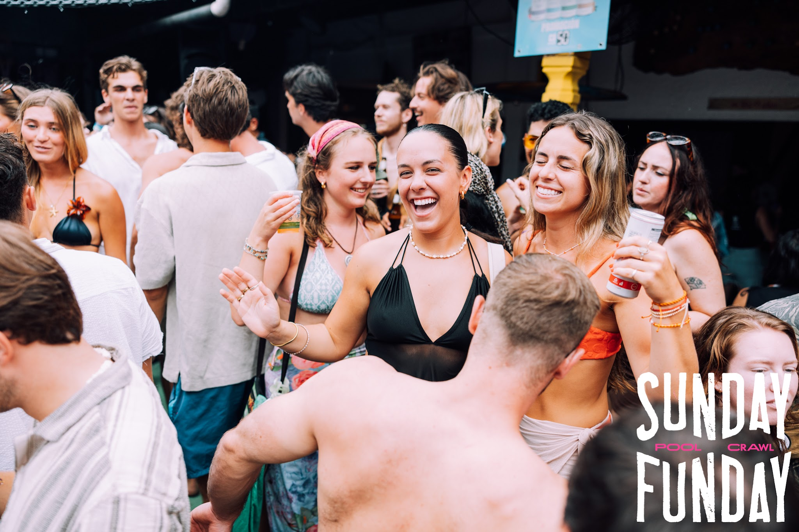
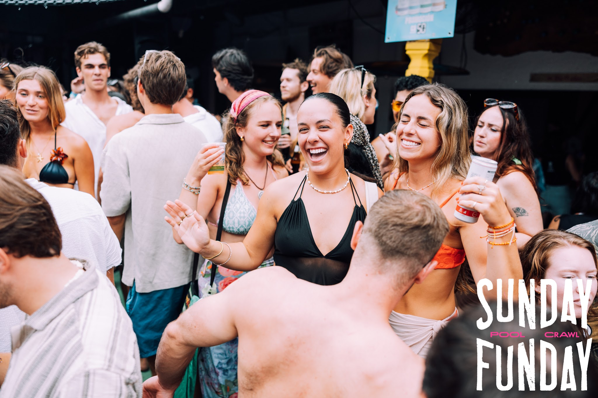
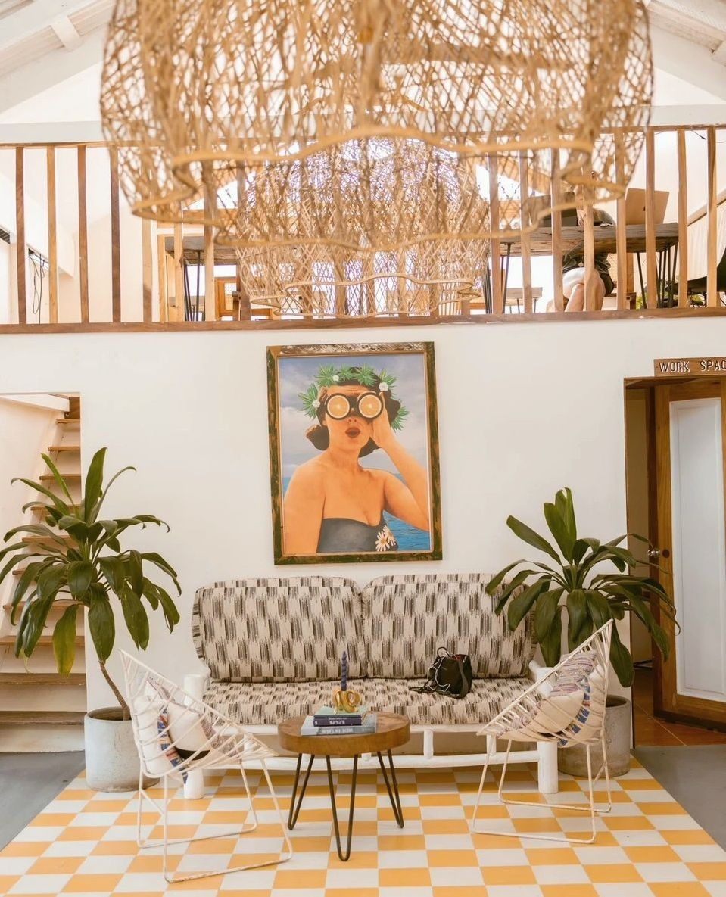
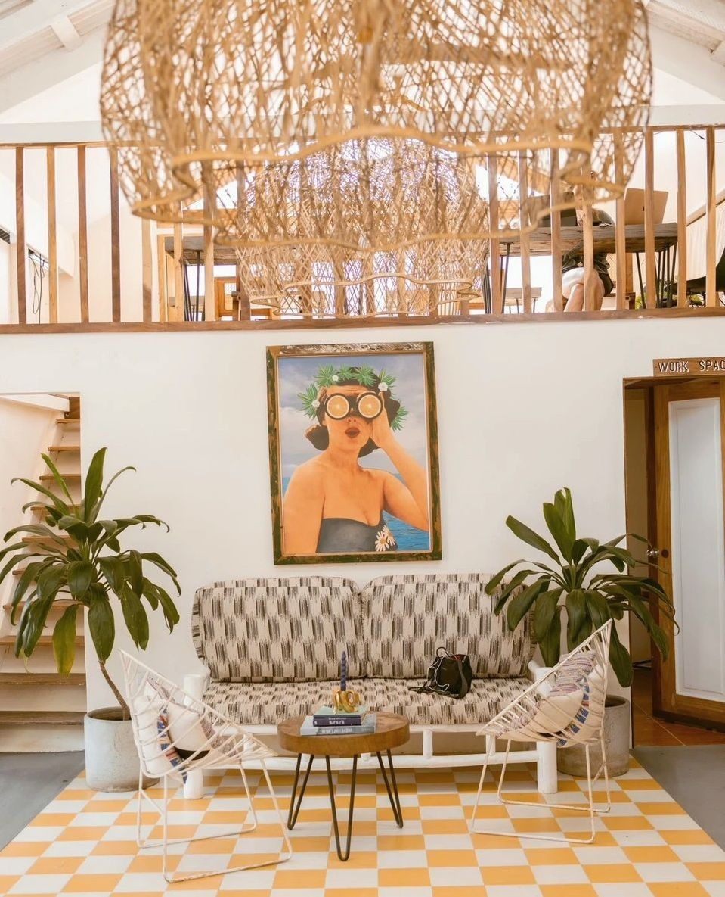
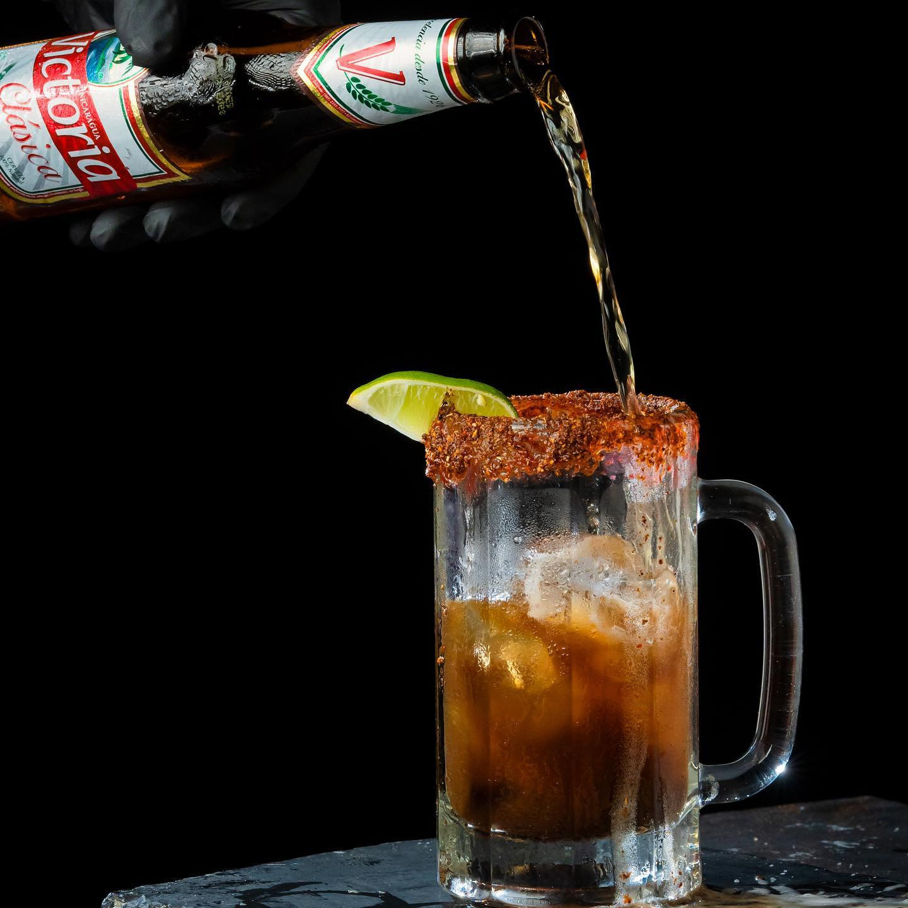
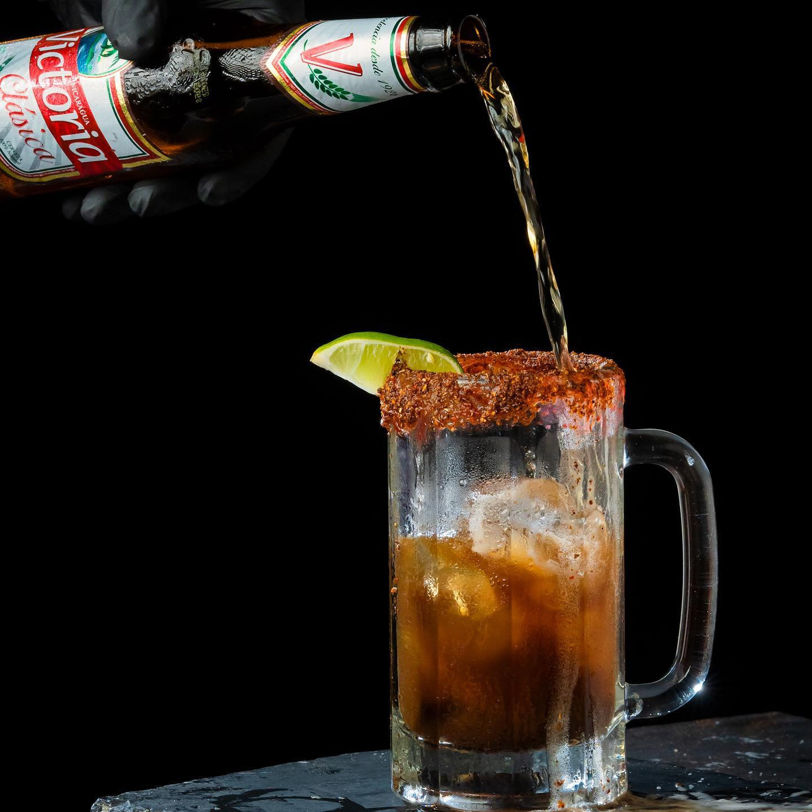

Entretenimiento
Sunday Funday:
Si te gusta la buena música y la diversión, vive la experiencia del Sunday Funday Pool Crawl, el pool party más grande de Centroamérica, diseñado para transformar tu domingo en el mejor día de la semana.
Sunday Funday es uno de los eventos más esperados por viajeros y locales en San Juan del Sur. Cada domingo, el famoso Pool Crawl te lleva a tres hostales con piscinas, música y un ambiente lleno de vida. Es la oportunidad perfecta para conocer gente de todas partes, disfrutar del día y crear recuerdos únicos en un entorno vibrante que refleja la esencia de este destino.

 



 


 
